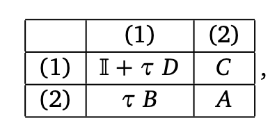

Time Evolution#
In the case of quantum many body systems time evolution amounts to solving the time dependent schrodinger equation $\(i \frac{\partial}{\partial t} \ket{\Psi(t)}= \hat{H}\ket{\Psi(t)}\)\( for a given Hamiltonian \)\hat{H}\( with initial condition \)\ket{\Psi_0}=\ket{\Psi(t_0)}\(. For a time independent Hamiltonian the solution is given by \)\ket{\Psi(t)} = \exp(-it\hat{H})\ket{\Psi_0}$. By approximating the time evolution operator in the Tensor Network language, we can also study real-time dynamics.
One should keep in mind that time evolution in general will increase the entanglement of the state so that in practice time evolution can only be done with Tensor Networks for relatively modest times. In case of a quench the entanglement will grow linearly so that the bond dimension of the MPS would need to grow exponentially in order to accurately follow the time evolved state.
Below are some time evolution methods for MPS
(i)TEBD
TDVP
Time Evolution MPO
In this part of the tutorial we will focus on the latter two.
TDVP#
The Time-Dependent Variational Principle is an old idea, originaly developed by Dirac and Frenkel in the 1930’s. The idea is to solve the schrodinger equation by minimizing $\(\|i \frac{\partial}{\partial t} \ket{\Psi(t)}- \hat{H}\ket{\Psi(t)}\|^2\)\( In the case of MPS, we can parametrize the state \)\ket{\Psi(t)}\( by a set of time dependent matrices \){A_1(t),A_2(t),\dots A_N(t)}\( (where N is the system size for finiteMPS or the size of the unit cell for infinite MPS). In other words the state \)\ket{\Psi(t)}\( lives in a manifold determined by these matrices, the MPS-manifold. Geometrically the solution of the minimization problem is given by the projecting of the RHS of the schrodinger equation onto the MPS manifold \)\(\frac{d}{dt} \ket{\Psi(A)} = -i \hat{P}_{T\ket{\Psi(A)}} \hat{H}\ket{\Psi(A)}\)\( where \)\hat{P}_{T\ket{\Psi(A)}}\( is the operator that projects the state onto the tangent space. As a consequence the time-evolving state will never leave the MPS manifold and parametrization in terms of \)A(t)\( makes sense. One can in principle work out the above equation on the level of the \)A$ matrices and try to solve the above equation. This gives a complicated set of (non-linear) equations that can be solved by one’s favourite finite difference scheme, but requires the inversion of matrices with small singular values (and thus numerical instabilities). Instead, it turns out that a natural and inversion free way of solving this equation is possible if we gauge the mps to mixed form.
For a finite MPS, one can show that in the mixed gauge the projection operator is given by
 The projection operation consists of two sums, one acting on the \(AC\) on site \(n\) and the other on the bond tensor \(C\) to the right of it
The projection operation consists of two sums, one acting on the \(AC\) on site \(n\) and the other on the bond tensor \(C\) to the right of it
where we have brought the tensor on site \(n\) into AC form and one where we only have the . The insight is that we can solve each term seperately (and in fact in any order). For each site \(n\) of the MPS we have $\(\dot{A}_C(n) = -i \hat{H}_{eff}^{A_C}[ A_C(n)]\)\( and \)\(\dot{C}(n) = i \hat{H}_{eff}^{C}[ C(n)]\)\( Aproximating the effective Hamiltonians as independent of the other \)A_C\( and \)C\( these can be integrated exactly \)\(A_C(n,t+dt) = \exp(-idt \hat{H}_{\text{eff}}^{A_C}) A_C(n,t) \)\( and \)\(C(n,t+dt) = \exp(idt \hat{H}_{\text{eff}}^{C}) C(n,t) \)$ A natural way to solve the set of equations is then, starting from the first site
update \(A_C(n)\) according to the above formula
QR the resulting new \(A_C'\) to get a new updated \(A_L(n,t+dt)\) en \(C(n,t+dt)\)
Update the new \(C(n,t+dt)\) via the above to get an \(\tilde{C}\)
Absorb \(\tilde{C}\) into \(A_R(n+1,t)\) to get a new \(A_C(n+1,t)\) and repeat
At the end of the chain one only updates the \(A_C\) since there is no \(C\) there. Doing the above left to right sweep gives a first order integrator i.e. we have solved the time evolution up to order \(\mathcal{O}(dt^2)\). Since the terms can be solved in any order we can also perform a reverse sweep i.e. working from right to left. Combining this with the left to right sweep yields a second order integrator (because the reverse sweep is the adjoint of the forwards sweep).
For an infinite MPS one can also do a sweep-like update until some criteria converges to obtain new tensors \(\{A_L,C,A_C,A_R\}\). However this can be costly since one has to iterate until convergence. Another option is to exploit the translational invariance of the system by demanding that \(C=\tilde{C}=\exp(idt \hat{H}_{\text{eff}}^{C}) C(n,t+dt)\). This allows us to turn things around and find \(C(n,t+dt)=\exp(-idt \hat{H}_{\text{eff}}^{C}) C(n)\). Given the newly found \(C(n,t+dt)\) and \(A_C(n,t+dt)\) one can find a new \(A_L\), giving a MPS for t+dt.
The TDVP method has a couple of nice properties reminiscent of the Schrodinger equation it is trying to solve. First of all, it acts trivial on (numerical) eigenstates of \(\hat{H}\) since then \(\hat{H}_{\text{eff}}^{A_C}[A_C] \propto A_C\) and the whole MPS picks up a phase equal to \(e^{-i dtE}\). In addition it conserves energy and is time-reversible for time-independent Hamiltonians.
Time Evolution MPO#
Perhaps the most natural way to perform the time evolution would be to write the time evolution operator as a MPO. The evolved state would then simply be the contraction of this MPO onto an MPS. The exponential can be approximated up to any order by its trunctated Taylor series
$\(\exp(-\tau\hat{H}) = \hat{1} + \tau\hat{H} + \frac{\tau^2}{2}\hat{H}^2 + \mathcal{O}(\tau^3)\)\(
The MPO approximation of the time evolution operator then boils down to implementing powers of \)\hat{H}$ in an efficient (i.e. with the lowest possible MPO bond dimension) and size-extensive way. For example, for a MPO Hamiltonian of the form

which corresponds to the Hamiltonian $\(\hat{H} = \sum_i \hat{D}_i + \hat{C}_i \hat{B}_{i+1}\)\( The first order appriximation of \)\exp(-\tau\hat{H})$ is given in table form by

Doing the matrix multiplcation (and remembering that for MPO the boundary conditions are so the we need the left upper expression) we find $\(\exp(-\tau\hat{H}) \approx \hat{1} + \tau \left(\sum_i D_i + C_i B_{i+1}\right) = \hat{1} + \tau \hat{H}\)$ as desired.
The trick for generating the first order approximation involves removing the third “level” from the MPO form of H and multiplying with the appropriate factor of τ. This can be visualised as follows

This method can be extended to any desired order in \(\tau\) thus allowing us to represent \(\exp(-\tau\hat{H})\) as an MPO.
Imaginary time evolution#
Besides simulating dynamics, any time evolution method can also be used to find the groundstate of \(\hat{H}\) by taking \(t\) to be imaginary. The basis for this idea is the fact that $\(\ket{\Psi_0} = \lim_{\tau->+\infty} \frac{e^{-\tau \hat{H}} \ket{\Psi}}{\sqrt{\braket{\Psi|e^{-2\tau \hat{H}} |\Psi}}}\)\( where \)\ket{\Psi}\( is any initial state not orthogonal to the ground state. Indeed expanding the initial state in the eigenbasis of \)\hat{H}\( we have \)\ket{\Psi} = \sum_i c_i \ket{E_i}\( with \)\ket{E_i}\( the eigenstate with energy \)E_i\( and \)E_0 < E_1 < E_2 < \dots\(. Then \)\(e^{-\tau \hat{H}} \ket{\Psi} = \sum_i c_i e^{-\tau E_i} \ket{E_i}\)$
In taking the limit \(\tau\to+\infty\) the slowest vanishing exponential is that of \(E_0\). In this way the ground state gets projected out of the initial state. Demanding that the state is normalized gives $\(\lim_{\tau->+\infty} \frac{e^{-\tau \hat{H}} \ket{\Psi}}{\sqrt{\braket{\Psi|e^{-2\tau \hat{H}} |\Psi}}} = \lim_{\tau->+\infty} \frac{\sum_i c_i e^{-\tau E_i} \ket{E_i}}{\sqrt{\sum_i |c_i|^2 e^{-2\tau E_i}}} = \frac{c_0 }{|c_0|} \ket{E_0}\)$ which gives the ground state up to an irrelevant phase factor.
Finite Temperature#
It is possible to use time evolution methods to construct thermal density operators i.e. \(\rho = \frac{1}{Z}e^{-\beta \hat{H}}\) with \(\beta=1/T\) and \(Z\) a normalization constant. The idea here is to write \(\rho\) as an MPO
 with the constraint that
with the constraint that
 This particula form ensures that \(\rho\) is a positive semi-definite and thus physical. Note that for \(d_k=1\) we obtain the density matrix of a pure state. We can represent \(\rho\) as the desnity matrix of pure state (i.e. a MPS) by introducing ancilla’s (i.e. ) \(\{\ket{a_k}\}\) so that
This particula form ensures that \(\rho\) is a positive semi-definite and thus physical. Note that for \(d_k=1\) we obtain the density matrix of a pure state. We can represent \(\rho\) as the desnity matrix of pure state (i.e. a MPS) by introducing ancilla’s (i.e. ) \(\{\ket{a_k}\}\) so that
 One immedeatly sees that \(\rho=\text{Tr}_a({\ket{\Psi}\bra{\Psi}})\). The thermal density operators \(\rho(\beta)\) for any \(\beta\) can then be found by starting from the \(\beta=0\) state \(\rho(0)=\mathbf{1}\) and performing imaginary time evolution
$\(e^{-\beta H} = (e^{-\Delta \tau \hat{H}})^M\rho(0)(e^{-\Delta \tau \hat{H}})^M\)\(
with \)\Delta \tau = \frac{\beta}{2M}\(. Or in terms of the purification state \)\ket{\Psi(\beta)}=(e^{-\Delta \tau \hat{H}})^M \ket{\Psi(0)}$.
One immedeatly sees that \(\rho=\text{Tr}_a({\ket{\Psi}\bra{\Psi}})\). The thermal density operators \(\rho(\beta)\) for any \(\beta\) can then be found by starting from the \(\beta=0\) state \(\rho(0)=\mathbf{1}\) and performing imaginary time evolution
$\(e^{-\beta H} = (e^{-\Delta \tau \hat{H}})^M\rho(0)(e^{-\Delta \tau \hat{H}})^M\)\(
with \)\Delta \tau = \frac{\beta}{2M}\(. Or in terms of the purification state \)\ket{\Psi(\beta)}=(e^{-\Delta \tau \hat{H}})^M \ket{\Psi(0)}$.
Out-of-the-box code#
Below is some code on how MPSKit and MPSKitModels can be used out-of-the-box to perform time evolution.
H₀ = transverse_field_ising(;J=1.0,g=0.0)
#Create a MPS with physical bond dimension d=2 and virtual D=50 and optimize it
gs = InfiniteMPS([2],[50]);
(gs,envs,_) = find_groundstate(gs,H₀,VUMPS(maxiter=400));
#Let’s check some expectation values
sx_gs = sum(expectation_value(gs,σₓ))/length(gs)
E_gs = sum(expectation_value(gs,H₀,envs))/length(gs)
#Let’s define the algorithm for time evolution and the Hamiltonian for it
alg = TDVP()
Ht = transverse_field_ising(;J=1.0,g=0.0)
dt = 0.01
Do the quench
(st_t,envs) = timestep(gs,Ht,dt,alg)